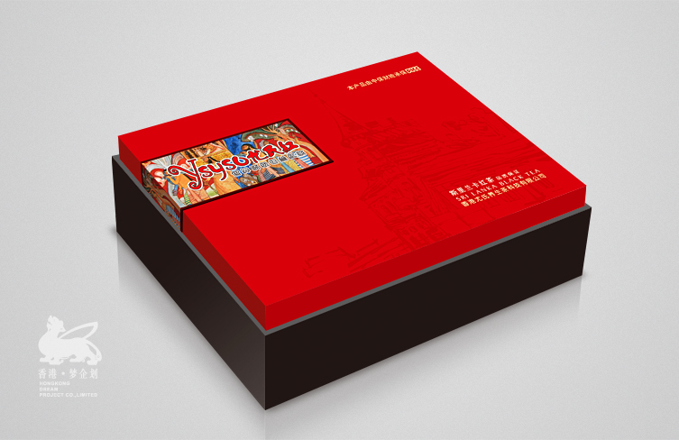
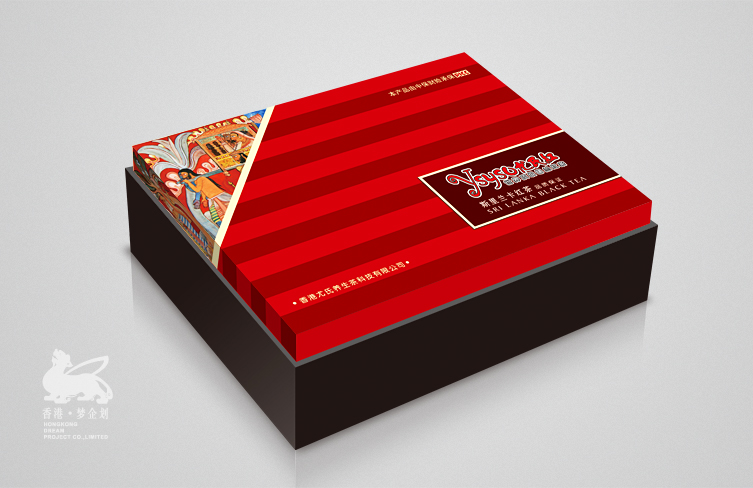
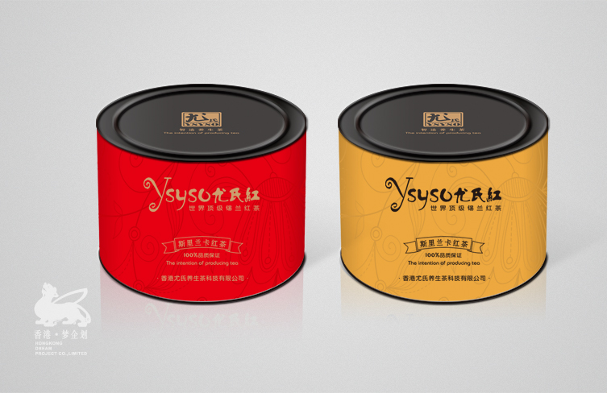
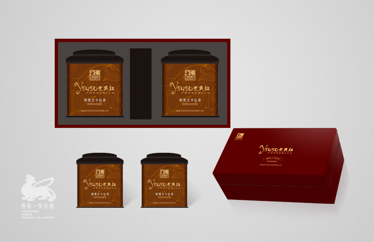
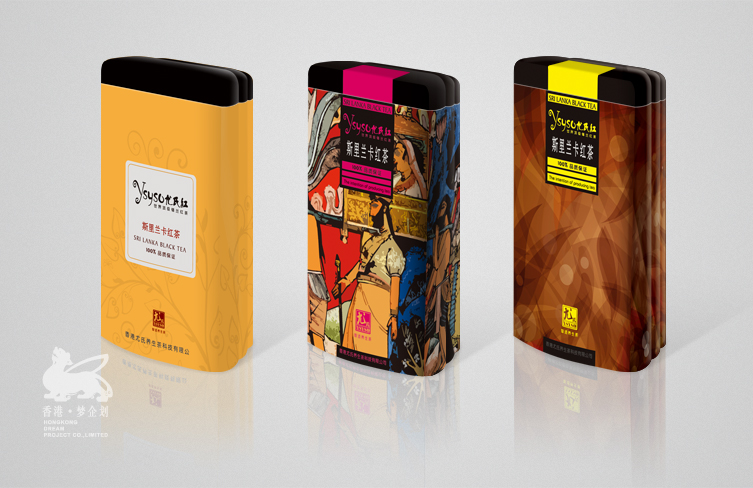
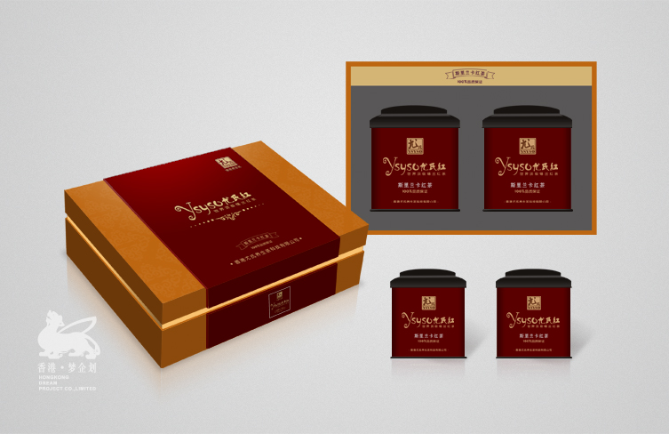
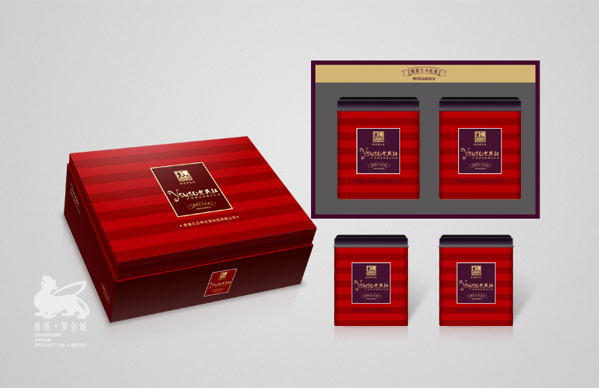
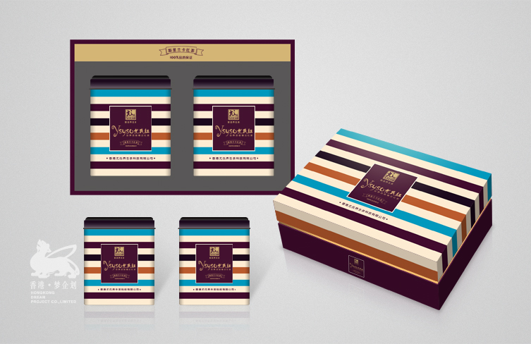

公司背景
香港尤氏，一家以健康茶饮为企业品牌的核心定位，主营国内外知名红茶，做专业的“肝”养护的茶行业。尤氏茶业这两年发展很快，
在当今的市场上占据了非常好的局势。但是，产品包装的问题一直是他们最薄弱的环节，为了解决这方面的顾虑，
2012年夏季和我司达成共识，成为最亲近的战略合作伙伴。
产品包装开发规划设计
我们抓住“酒前酒后来一壶”这一个关键卖点，集中性的引导消费者健康茶叶的姿态。来自世界各地不同类别的名红茶有各自的特点，我们围绕
原产地地方风俗特色，更形象的展示茶饮的原生态。
鉴于消费人群饮用特点，我们还开发出大份量大包装款式，更符合了人群的需求。
服务内容
1、品牌消费人群特点剖解分析
2、品牌市场分析定位
3、产品及包装设计及营销开发
4、CRM老顾客维护系统开发
       